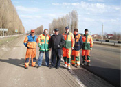
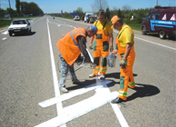
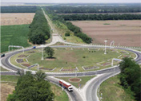
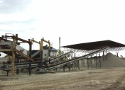
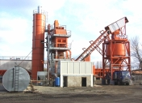

Капитальный ремонт а/д Горячий Ключ-Хадыжинск, км 26+247-38+073
В соответствии с решением правительства СССР о создании машинно-
дорожных станций (МДС), в восточной части г. Краснодара, рядом с дорогой Краснодар-Усть-Лабинск, на пустыре расположилась база вновь созданной МДС-9 (впоследствии ДСУ №1).
Объекты

Капитальный ремонт автомобильной дороги Краснодар-Ейск, км 0+000 - 1+000 (второй пусковой комплекс)
Первые автомобильные дороги, на которых производились работы - это «Краснодар-Новомышастовская», «Подъезд к аэропорту». Дороги строились с твердым гравийным покрытием до 20 см и грунтово-улучшенные.Первые автомобильные дороги, на которых производились работы - это «Краснодар-Новомышастовская», «Подъезд к аэропорту». Дороги строились с твердым гравийным покрытием до 20 см и грунтово-улучшенные.
Первые автомобильные дороги, на которых производились работы - это «Краснодар-Новомышастовская», «Подъезд к аэропорту». Дороги строились с твердым гравийным покрытием до 20 см и грунтово-улучшенные.

Ремонт автомобильной дороги Кубанская-Саратовская, км 29+300-30+100, км 32+130-32+850
При строительстве автомобильной дороги «Новая Адыгея-Яблоновский» впервые была опробована экономичная технология с использованием стабилизированного цементом песка, на автодороге «Краснодар-х.Ленина» устраивалось основание с использованием «тощего бетона».

Ликвидация последствий ЧС на а/д подъезд к с. Фанагорийское, км 4+200, км 5+500, км 5+700
Первые автомобильные дороги, на которых производились работы - это «Краснодар-Новомышастовская», «Подъезд к аэропорту». Дороги строились с твердым гравийным покрытием до 20 см и грунтово-улучшенные.

Ремонт автомобильной дороги Краснодар-Ейск, км 24+337 - 29+062
При строительстве автомобильной дороги «Новая Адыгея-Яблоновский» впервые была опробована экономичная технология с использованием стабилизированного цементом песка, на автодороге «Краснодар-х.Ленина» устраивалось основание с использованием «тощего бетона».